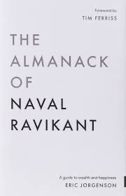

Maitri Gohil
Hi, I'm a Computer Science Engineer interested in how artificial intelligence transforms organisations and the nature of work. My research interests include AI adoption, organisational transformation, individual adaptation to technological change, and human-AI collaboration.
I currently work as a Research Assistant at the Indian Institute of Management Ahmedabad (IIMA), and previously spent a summer as a research intern at the Indian Institute of Management Indore (IIMI). My research has been presented at the India Strategy Conference (ISC) and the IMC-IRC Conference at IIFT Delhi, with an abstract also accepted for the INFORMS Annual Meeting in Atlanta, 2025. I was awarded the AOM STR Global Fellowship at ISC by the Strategic Management (STR) Division of the Academy of Management (AOM).
Achievements
AOM STR Global Fellowship
Fellowship awarded by the Strategic Management (STR) Division of the Academy of Management (AOM)
I have been awarded the AOM STR Global Fellowship and a research grant of $1000 for my contribution as an emergent scholar in the literature of strategy, recognising my research work on tacit knowledge and artificial intelligence, which I presented at ISC 2025 (India Strategy Conference). This fellowship includes partial travel support to the conference and registration waiver.
Work
Research Assistant
IIM Ahmedabad | ADCLOD Centre | Prof. Neharika Vohra
Currently driving two parallel streams of work at ADCLOD, both circling the same question: how organisations actually change when the ground shifts under them.
Project 1: Organisational Transformation in the Generative AI Era
- Leading a qualitative, multi-case process study examining how organisations transform as generative AI becomes embedded in everyday work, spanning 6 dimensions: work practices, routines, leadership, knowledge management, governance, and human-AI collaboration
- Building the study's theoretical foundations on Gioia methodology, drawing on Raisch & Krakowski, Feldman & Pentland's routines-as-practice framework, and Orlikowski's technology-in-practice perspective
- Designing a research protocol targeting 8–10 organisations and 50–80 semi-structured interviews across knowledge-intensive sectors
Project 2: Social Impact Leadership & Entrepreneurship
- Producing ADCLOD's Podcast Series with Social Impact Founders, leading transcript development, editorial formatting, and content strategy for 12+ episodes with leaders including Aditya Natraj (Piramal Foundation), Saroj Mahapatra (PRADAN), Rukmini Banerji (Pratham), Harish Hande, and others
- Independently designed and developed the series' dedicated website, adclodsocialimpact.com, now live and hosting the project's full body of work, in addition to maintaining distribution on Apple Podcasts and Spotify
- Translating long-form founder conversations into structured, publishable content that captures how social enterprises lead and scale change
Research Intern
IIM Indore | Prof. Swapnil Garg
- Investigated the epistemological limits of AI through Michael Polanyi's theory of tacit knowledge, focusing on qualitative interpretive analysis
- Designed and executed a rigorous qualitative coding framework using NVivo and Gioia methodology to systematically analyze philosophical texts
- Identified and categorized 40+ conceptual constructs related to tacit knowing, personal knowledge, and AI's cognitive boundaries
- Conducted iterative coding cycles (first-order codes, second-order themes, aggregate dimensions) to develop a comprehensive theoretical framework
- Co-authored two research manuscripts examining the philosophical foundations of AI limitations and their implications for knowledge representation
- Synthesized insights from philosophy of mind, cognitive science, and AI research to build interdisciplinary arguments
Founding Team Member & Tech Head
BPlan (bplan.info): CFA Exam Preparation Platform
- Joined as a founding team member of BPlan, an ed-tech platform for CFA exam preparation, owning product and technology end-to-end
- Led the product from the ground up: scoping the roadmap, building study materials and premium content, and shipping the full platform to production
- Served as Tech Head: built and deployed the site with a staging-to-production workflow, custom domain, SEO, and analytics infrastructure
- Drove platform revenue growth from launch, driven entirely by product decisions and content built specifically for finance students
Research Intern
GIFT City (IFSC Department)
- Conducted an in-depth research study on 50+ FinTech entities operating within India's first International Financial Services Centre (IFSC) at GIFT City
- Designed and executed primary research methodology, conducting structured interviews with stakeholders including PwC, EY, Bank of America, and multiple FinTech entities
- Synthesized findings into a comprehensive research report analyzing regulatory frameworks, operational models, and innovation patterns in the IFSC ecosystem
- Collaborated with the technology team to design and implement a Visitor Management System for the Special Economic Zone (SEZ), reducing average wait times by over 60%
Incubation Support
KIIF (Karnavati University Incubation and Innovation Foundation)
- Contributed to the preparation of 10+ investor pitching decks for early-stage startups across diverse sectors
- Led coordination and documentation efforts for startup incorporation filings and regulatory compliance
- Designed creative strategies for workshops and seminars to foster entrepreneurial culture across the centre
- Mentored founders on pitch refinement, business model validation, and go-to-market strategies
Web Developer
UIT Portal Development
- Was part of a team of 4 developers to build the university's comprehensive student management portal
- Designed and implemented full-stack solutions for student data management, course registration, and academic tracking
Education
| Course | College/University | Year | CGPA/% |
|---|---|---|---|
| Class X | Naimisharanya School, Bhavnagar | 2019–2020 | 93.20% |
| Class XII | Naimisharanya School, Bhavnagar | 2021–2022 | 94.00% |
| B.Tech CSE | Karnavati University, Gandhinagar | 2021–2025 | 72.34% |
Presentations
Does AI Know? A Tacit Knowledge Perspective
India Strategy Conference (ISC) @ Indian School of Business (ISB), 2025
Presented original research examining AI's epistemological boundaries through Polanyi's framework of tacit knowing. The paper explores fundamental questions about machine cognition and the irreducible role of embodied, personal knowledge in human understanding.
PresentedAI in Education: A Tacit Knowledge Perspective
IMC_IRC @ IIFT Delhi, 2025
Explored the implications of AI integration in educational contexts, arguing that certain dimensions of learning, rooted in tacit knowledge, resist algorithmic capture. The presentation highlighted critical gaps in AI-mediated pedagogy.
PresentedA Tacit Knowledge Perspective on Nature and Boundaries of AI
INFORMS Annual Meeting, Atlanta, 2025
Earlier version of the tacit project exploring the philosophical foundations of AI limitations.
Abstract AcceptedSkills
Research Skills
Tech Stack
Books I Would Love to Talk About

The Almanac of Naval Ravikant
Ongoing
A guide to wealth and happiness compiled from Naval's wisdom on building wealth, happiness, and self-knowledge.

The Second Machine Age
Completed
Exploring how digital technologies are transforming work, progress, and prosperity in unprecedented ways.

Human + Machine: Reimagining Work in the Age of AI
Completed
Examining how AI is fundamentally reshaping business processes and the future of human-machine collaboration.

The Tacit Dimension
Completed
Polanyi's foundational work on tacit knowledge: the knowledge we can't articulate but forms the basis of human understanding.
Contact me
I'm always interested in discussing research collaborations, speaking opportunities, or innovative projects at the intersection of AI and management.